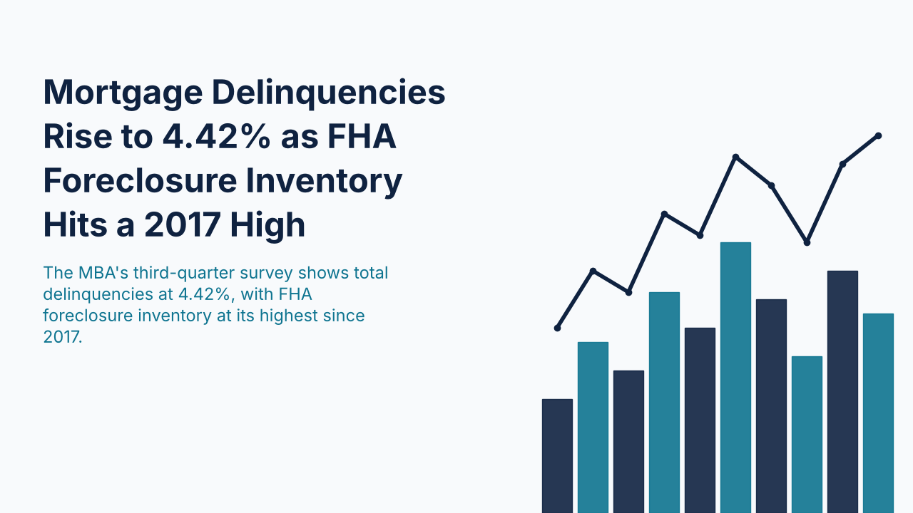
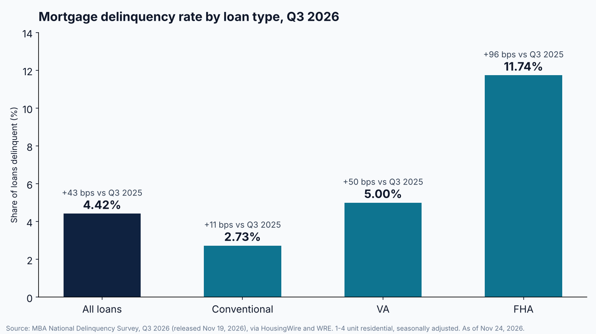

Mortgage Delinquencies Rise to 4.42% as FHA Foreclosure Inventory Hits a 2017 High

The share of U.S. residential mortgages that are past due rose again in the third quarter. The Mortgage Bankers Association (MBA) reported on November 19, 2026 that the seasonally adjusted delinquency rate for one-to-four-unit loans reached 4.42%, up 5 basis points from the second quarter and 43 basis points above the third quarter of 2025. Loans entering foreclosure represented 0.21% of the total, and the foreclosure inventory stood at 0.71%, up 4 basis points on the quarter and 21 basis points on the year.
The strain is concentrated in government-backed loans. FHA loans carried a delinquency rate of 11.74%, which was 5 basis points lower than the second quarter but 96 basis points higher than a year earlier. VA loans reached 5.00%, up 11 basis points on the quarter and 50 basis points on the year. Conventional loans were far steadier at 2.73%, up 1 basis point on the quarter and 11 basis points on the year. The FHA foreclosure inventory rate of 1.89% is the highest since the first quarter of 2017, and the VA rate of 1.06% is the highest since the fourth quarter of 2016.

Loans that are 90 days or more past due, or already in foreclosure, rose for a fifth consecutive quarter. That serious delinquency measure, which is not seasonally adjusted, stood at 2.12%, 51 basis points above the third quarter of 2025. MBA's Marina Walsh noted that overall delinquency tends to track the unemployment rate, which was 4.1% in October, and pointed to wage growth lagging inflation, lower personal savings, and rising credit card, auto, and student loan balances. She also cited the end of some pandemic-era relief options as an added pressure on borrowers.
For investors and lenders, the divergence by loan type matters more than the headline. Stress among leveraged, lower-down-payment owner-occupants can eventually feed distressed inventory, but it does not translate evenly across markets or property types, and conventional performance remains comparatively sound. Lenders pricing risk this week will likely look harder at borrower reserves, debt-to-income, and payment history, while investors weighing acquisitions in high-FHA submarkets should expect more motivated sellers over time without assuming discounted pricing.
The third-quarter data does not describe a broad credit event. It describes a widening gap between conventional borrowers, who are performing, and government-backed borrowers, who are not. Investors and lenders will be better served by tracking that gap, and by confirming deal fundamentals early, than by reacting to the national average alone.